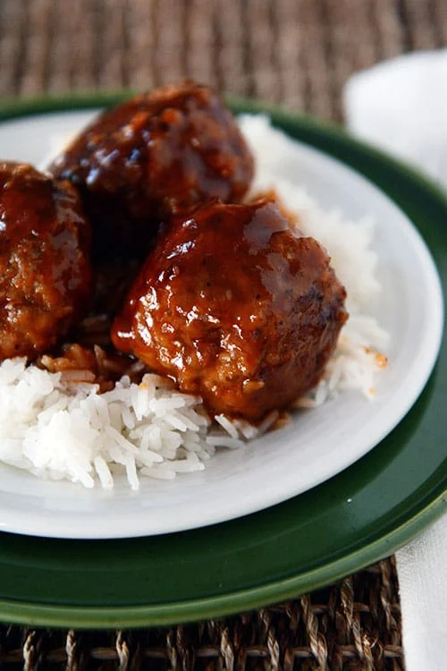

Sweet And Sour Meatballs

Descrption
Looking for the perfect meatball recipe? Look no further! These sweet and sour meatballs are tender, perfectly
seasoned, and amazingly delicious!
Ingredients
Meatballs
- 1 ½ pounds lean ground meat, see note
- ¾ cup quick oats or old-fashioned oats that have been lightly pulsed in a blender
- 2 eggs, slightly beaten
- ½ cup finely chopped onion
- ¼ cup milk
- 1 teaspoon salt
- ½ teaspoon pepper
- 1 teaspoon Worcestershire sauce
Sauce
- ¼-½ cup brown sugar, depending on how sweet you want the sauce
- ¼ cup apple cider vinegar
- 1 teaspoon yellow mustard
- 1 teaspoon yellow mustard
- ¼ cup barbecue sauce
- 1 teaspoon Worcestershire sauce
- Hot cooked rice for serving
Steps
- Preheat the oven to 350 degrees F.
- For the meatballs, combine all of the ingredients and mix well. Form into about 12 meatballs (right around
2-inches each). Place in a lightly greased 9X13-inch pan.
- For the sauce, whisk together the ingredients until well-combined
- Pour the sauce over the meatballs and bake for 30 minutes or until the meatballs are cooked through and the
sauce is slightly thickened.
- Serve over hot, cooked rice, if desired.